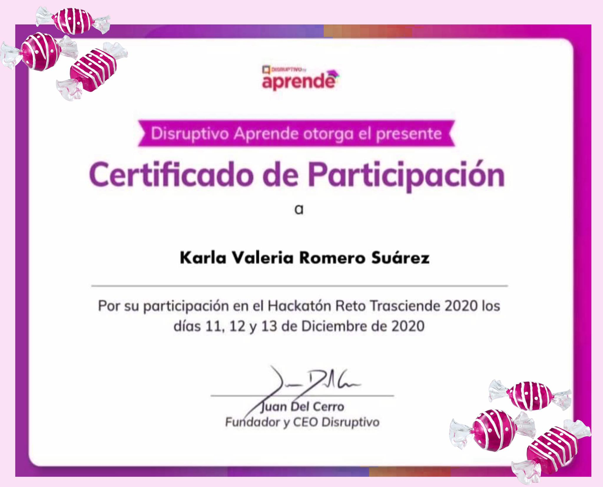

"Hackathon México"
- El Hackathon México fue un evento donde te concentras en un problema, identificando la verdadera necesidad y desarrollando múltiples soluciones que pueden ser implementadas en corto tiempo.
- Nos reunimos varios días para trabajar en pequeños y dar soluciones a un problema de la comunidad; trabajamos en un entorno único que fomento nuestro pensamiento creativo y nos conduc a nuevos conceptos, ideas y prototipos sorprendentemente innovadores.